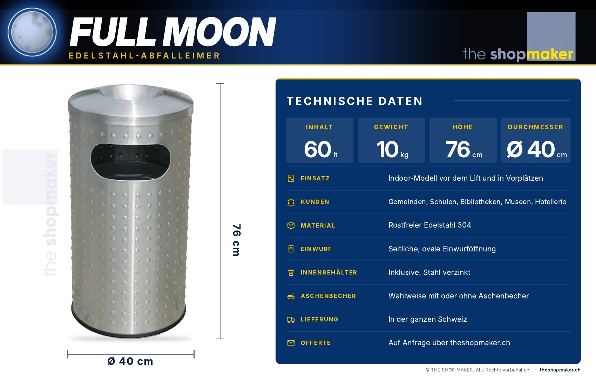

FULLMOON
Edelstahl-Abfalleimer · Modell 02 · Indoor
Das Indoor-Modell für den Bereich vor dem Lift und für Vorplätze. Aus rostfreiem Edelstahl 304, mit seitlicher, ovaler Einwurföffnung und Innenbehälter.
- 60 Liter
- 76 cm hoch
- Ø 40 cm
- 10 kg
Technische Daten
Alle Angaben stammen aus dem Datenblatt des Herstellers The Shop Maker.
- Einsatz
- Indoor-Modell
- Inhalt
- 60 Liter
- Höhe
- 76 cm
- Durchmesser
- Ø 40 cm
- Gewicht
- 10 kg
- Material
- Rostfreier Edelstahl 304
- Einwurf
- Seitliche, ovale Öffnung
- Innenbehälter
- Inklusive, Stahl verzinkt
- Aschenbecher
- Optional
- Lieferung
- In die ganze Schweiz
Das Datenblatt.
Alle technischen Daten von FULLMOON auf einer Seite, als PDF zum Speichern und Weitergeben.

Ausstattung im Detail.
Was FULLMOON für den Einsatz im Innenbereich mitbringt.
- 01
Seitliche, ovale Einwurföffnung
Der Einwurf liegt seitlich und ist oval geformt.
- 02
Innenbehälter inklusive
Ein Innenbehälter aus verzinktem Stahl gehört zum Lieferumfang.
- 03
Design mit kleinen Vollmonden
Das Muster mit kleinen Vollmonden gibt dem Abfalleimer seinen Namen und seinen Auftritt.
- 04
Abnehmbarer Deckel
Ein gewölbter, leicht abnehmbarer Deckel erleichtert das Leeren.
- 05
Bodenschonender Gummiring
Ein Gummiring am Fuss schont den Boden.
- 06
Aschenbecher optional
Auf Wunsch mit integriertem Aschenbecher. Bitte bei der Offertanfrage angeben.
Wo FULLMOON passt.
FULLMOON ist als Indoor-Modell für den Bereich vor dem Lift und für Vorplätze gedacht. Gemeinden, Spitäler, Schulen, Bibliotheken, Museen und die Hotellerie setzen ihn dort ein, wo der Innenraum ruhig und gepflegt wirken soll.
Für Eingänge im Freien und Tiefgaragen ist HALFMOON das passende Modell.
FULLMOON im Detail.
Deckel, Einwurföffnung und Innenbehälter aus nächster Nähe.


Bilder mit dem Hinweis «Visualisierung» sind computergenerierte Darstellungen.
Häufige Fragen
Gibt es FULLMOON mit Aschenbecher?
Ja. FULLMOON ist mit oder ohne integrierten Aschenbecher erhältlich. Bitte geben Sie Ihren Wunsch bei der Offertanfrage an.
Ist ein Innenbehälter dabei?
Ja, der Innenbehälter aus verzinktem Stahl ist inklusive.
Eignet sich FULLMOON für draussen?
FULLMOON ist als Indoor-Modell konzipiert. Für den Aussenbereich ist HALFMOON ausgelegt.
Was kostet FULLMOON?
Den Preis erhalten Sie mit der Offerte von The Shop Maker. Bei grösseren Mengen lohnt sich die Anfrage vorab.
Wohin liefern Sie?
In die ganze Schweiz.
Offerte
anfragen.
Nennen Sie uns Menge und Einsatzort. The Shop Maker meldet sich mit einem verbindlichen Angebot.
HALFMOON und FULLMOON sind Abfalleimer der Marke The Shop Maker.
Diese Seite informiert über die beiden Modelle, ihre Einsatzbereiche und die Wahl des passenden Abfalleimers. Die Marke, die Offerte, die Bestellung und die Lieferung in die ganze Schweiz laufen über The Shop Maker.
- Marke
- The Shop Maker
- Offerte und Bestellung
- theshopmaker.ch
- Lieferung
- In die ganze Schweiz